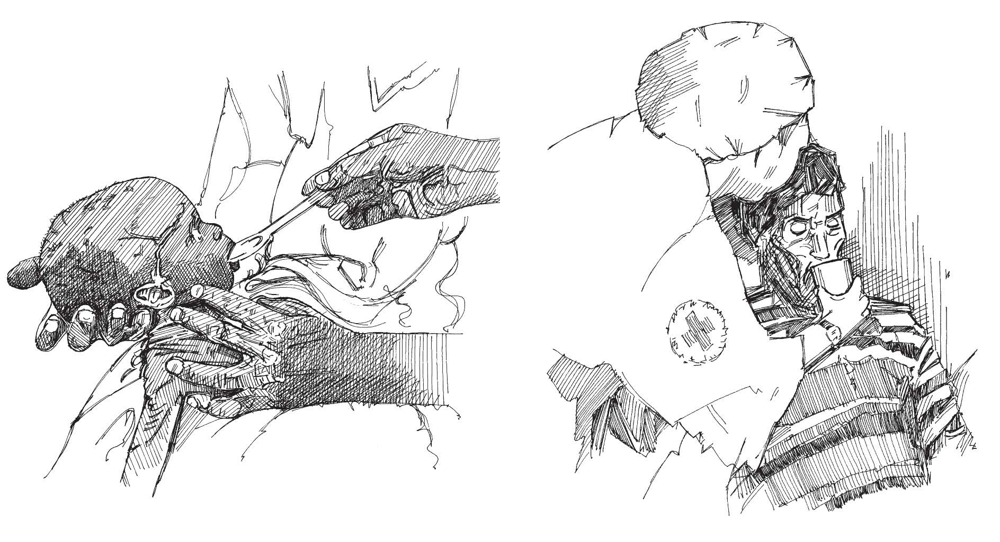

Overview
- Oral rehydration solution (ORS) is the first step in treating people who are suffering from diarrhoea and dehydration.
- If a patient has no signs of dehydration or signs of mild dehydration (see Action tool 7 ), he or she can be treated at home.
- Demonstrate how to prepare and give ORS.
- The caregiver should give the amount of ORS indicated in the table below.
For NO signs of dehydration
- Demonstrate how to prepare and give ORS.
- The care giver should give the amount of ORS indicated in the table below.
| Age |
Amount of ORS after each loose stool |
ORS packets needed |
| Less than 24 months |
50-100 ml (¼ – ½ cup) |
1 packet/day |
| 2-9 years |
100–200 ml (½ – 1 cup) |
1 packet/day |
| 10 years or more |
As much as wanted |
2 packets/day |
When there are SOME signs of dehydration
- Give the recommended amount of ORS (measure against either the patient’s age or weight).
- If the patient passes watery stools or wants more ORS than shown in the table above, give more.
- If the patient does not improve or some of the signs of severe dehydration appear, refer the patient to a health facility (see Action tool 4 ).
| Age |
Less than 4 months |
4-11 months |
12-23 months |
2-4 years |
5-14 years |
15 years or older |
| Weight |
Less than 5 kg |
5-7.9 kg |
8-10.9 kg |
11-15.9 kg |
16-22.9 kg |
30 kg or more |
| Oral solution in ml |
200-400 (1-2 cups) |
400-600 (2-3 cups) |
600-800 (3-4 cups) |
800-1200 (4-6 cups) |
1200-2200 (6-11 cups) |
2200-4000 (11-20 cups) |
How to give ORS
It is important to teach mothers and caregivers to administer ORS to children correctly, to help the child get better and prevent the epidemic from spreading.
- To a child that is under two years of age, give one teaspoonful every one to two minutes.
- To an older child, give frequent sips from a cup.
- If the child vomits, wait 10 minutes and then offer the solution again, more slowly.
- If diarrhoea continues after the ORS packets are used up, give home remedies until you get more ORS packets.
- Give the child as much clean water as he or she can drink.
- Continue to assess dehydration and refer the child to a clinic if he or she gets worse or does not improve after a few hours.

Giving ORS to a child. Giving ORS to an adult